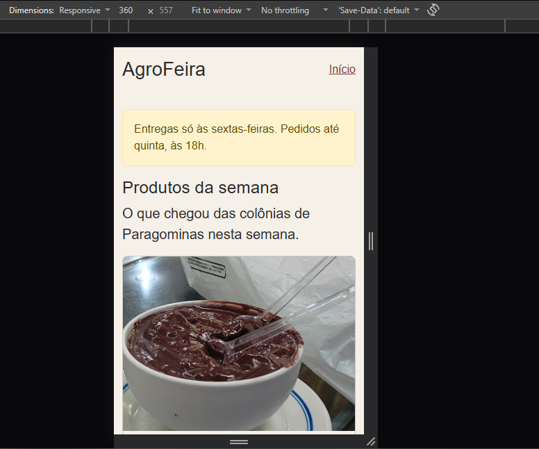
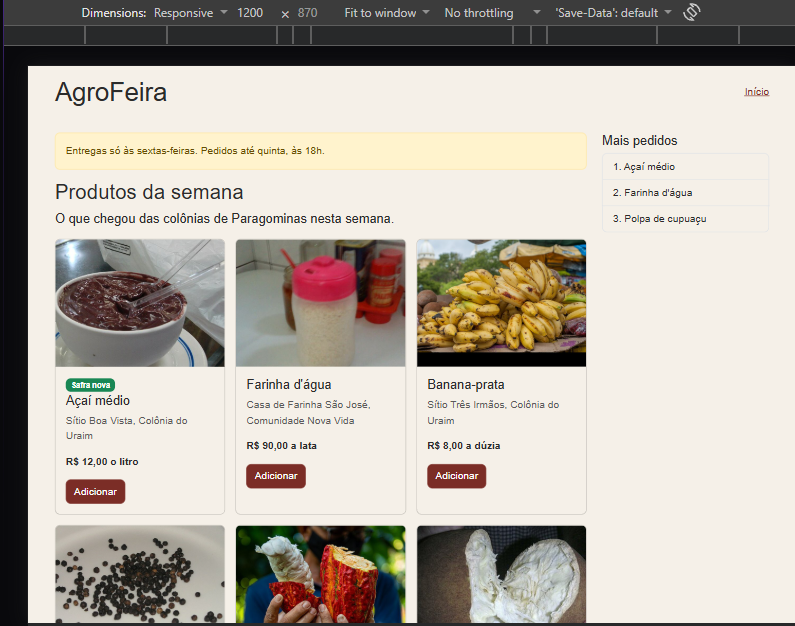
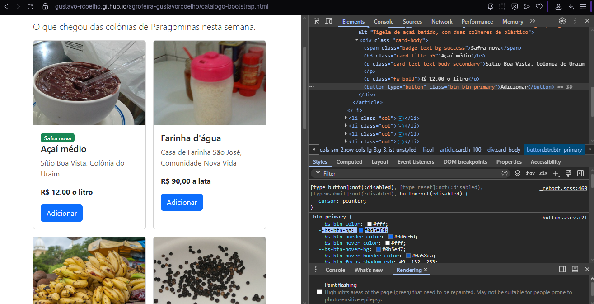
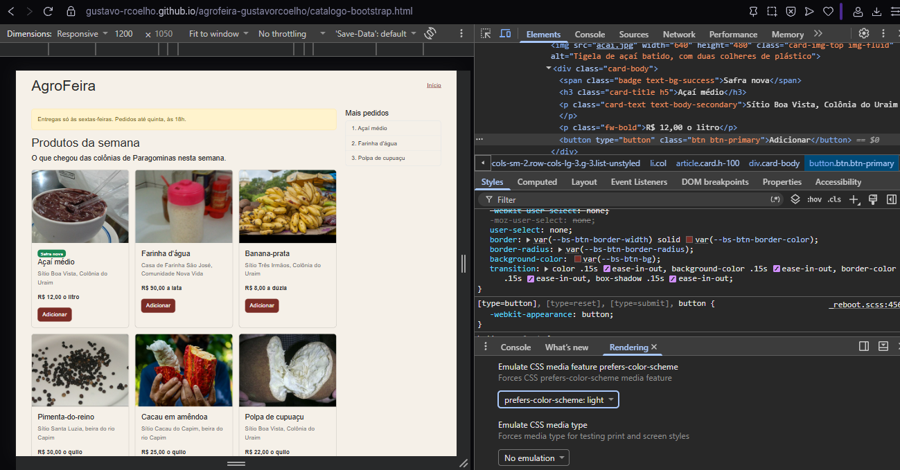
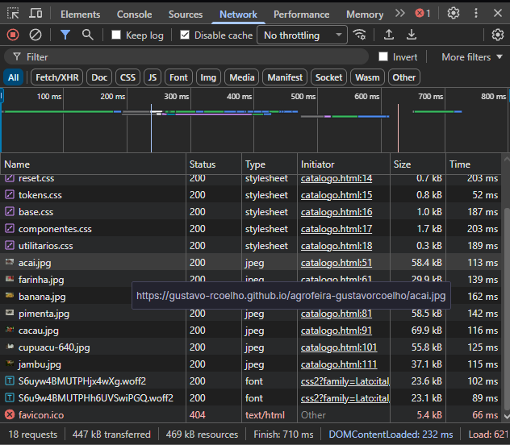
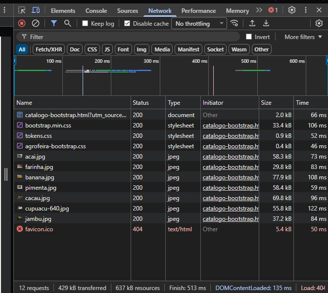
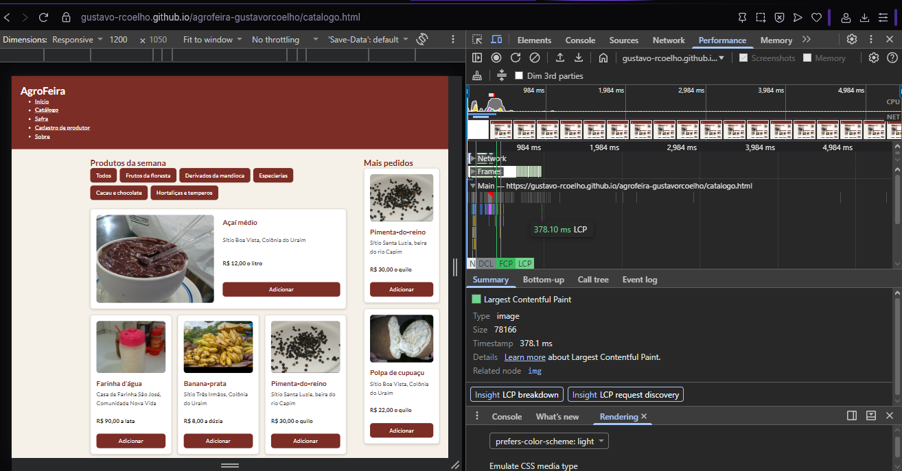
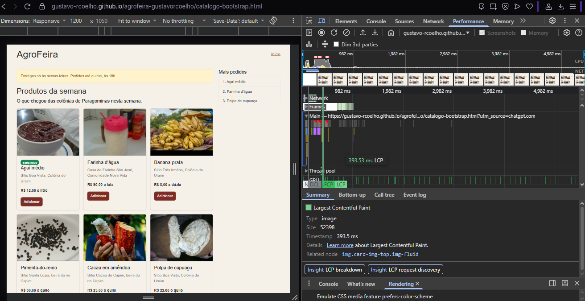

1. Introdução
Este relatório apresenta uma comparação entre o catálogo desenvolvido com CSS autoral e sua versão construída com Bootstrap 5.3.8. A análise considera o volume de dados transferidos, o desempenho de carregamento, a quantidade de linhas de CSS e o uso de classes nos componentes.
2. Comparação do volume de dados transferidos
As medições foram realizadas no Chrome DevTools, na aba Network, com a opção Disable cache ativada. Foram analisadas as versões públicas dos dois catálogos.
| Recurso | CSS autoral | Bootstrap |
|---|---|---|
| Total (All) | 423 kB | 430 kB |
| HTML (Doc) | 1,8 kB | 2,1 kB |
| CSS | 5,5 kB | 35,0 kB |
| Fontes (Font) | 28,2 kB | 0,0 kB |
| Imagens (Img) | 388 kB | 387 kB |
3. Comparação do desempenho (LCP)
O Largest Contentful Paint (LCP) mede o tempo necessário para renderizar o maior elemento visível da página. Foram realizadas cinco medições em cada catálogo, utilizando o Chrome DevTools, com o cache desativado e sem limitação de CPU ou rede.
| Medição | CSS autoral | Bootstrap |
|---|---|---|
| 1ª medição | 773,3 ms | 302,6 ms |
| 2ª medição | 307,5 ms | 385,8 ms |
| 3ª medição | 274,7 ms | 288,8 ms |
| 4ª medição | 317,3 ms | 509,9 ms |
| 5ª medição | 287,2 ms | 291,5 ms |
| Mediana | 307,5 ms | 302,6 ms |
| Amplitude | 498,6 ms | 221,1 ms |
O catálogo Bootstrap apresentou mediana de LCP 4,9 ms menor que a versão autoral. Entretanto, essa diferença é pequena diante da variação observada nas medições, não sendo suficiente para concluir que o Bootstrap oferece melhor desempenho.
4. Comparação das linhas de CSS e classes utilizadas
A comparação considera a quantidade de linhas dos arquivos CSS do projeto, incluindo comentários e linhas em branco, e a quantidade de classes utilizadas no card do Açaí médio.
| Indicador | CSS autoral | Bootstrap |
|---|---|---|
| Linhas de CSS do projeto | 530 | 84 |
| Classes no card do Açaí | 3 | 15 |
| Elementos com atributo class | 3 | 9 |
O catálogo Bootstrap utiliza 446 linhas a menos de CSS desenvolvido no próprio projeto, uma redução de aproximadamente 84,2%. Entretanto, essa contagem não inclui o código da biblioteca Bootstrap, carregada externamente.
No card do Açaí médio, o CSS autoral utiliza três classes distribuídas em três elementos. Já o Bootstrap utiliza 15 classes distribuídas em nove elementos, incluindo o selo "Safra nova". Sem considerar o selo, são 13 classes em oito elementos.
A versão autoral concentra a personalização nos arquivos CSS, enquanto o Bootstrap utiliza classes utilitárias e componentes diretamente no HTML. Além disso, o CSS autoral contém regras compartilhadas com outras páginas do AgroFeira, enquanto o arquivo agrofeira-bootstrap.css contém apenas a personalização necessária para integrar o Bootstrap à identidade visual.
5. Análise das diferenças entre as implementações
5.1. Desenvolvimento e personalização
Na versão com CSS autoral, a aparência e o comportamento dos componentes foram definidos por regras próprias, distribuídas entre os arquivos do projeto. Essa abordagem oferece maior controle sobre os estilos, mas exige implementar e manter manualmente as soluções de layout, responsividade e apresentação visual.
Na versão Bootstrap, a estrutura responsiva foi construída com classes prontas, como container, row, col, card e btn-primary. Isso reduziu a necessidade de escrever CSS específico, embora tenha aumentado a quantidade de classes presentes no HTML. A personalização das cores e da tipografia foi concentrada no arquivo agrofeira-bootstrap.css, utilizando variáveis CSS relacionadas aos tokens visuais do AgroFeira.
5.2. Funcionalidades e diferenças de escopo
O catálogo original apresenta recursos adicionais, como link para pular diretamente ao conteúdo principal, menu de navegação, organização por categorias e regras responsivas específicas. Também utiliza recursos modernos de CSS, como consultas de contêiner e o seletor :has(), que permitem adaptar componentes e aplicar estilos conforme sua estrutura e seu estado.
A versão Bootstrap foi desenvolvida com foco na apresentação dos produtos, utilizando um grid responsivo, cards, botões, aviso de entregas e uma lista lateral de produtos mais pedidos. Portanto, as duas páginas não apresentam exatamente as mesmas funcionalidades. Essa diferença deve ser considerada na interpretação dos resultados de desempenho e na comparação do esforço de desenvolvimento.
6. Limitações das medições
As medições de transferência de dados mostram a quantidade de informações recebidas pelo navegador, mas não permitem determinar isoladamente qual implementação oferece melhor desempenho. Isso ocorre porque os catálogos possuem diferenças de conteúdo, estrutura e carregamento de fontes. O catálogo original transferiu 423 kB, enquanto o Bootstrap transferiu 430 kB. Embora a diferença total seja pequena, o CSS do Bootstrap apresentou um volume transferido consideravelmente maior.
Outra limitação está relacionada às medições de LCP, que representam o tempo de renderização do maior elemento visível da página, e não exclusivamente o desempenho do CSS. Fatores como velocidade da conexão, processamento do navegador, carregamento das imagens e condições do computador podem influenciar os resultados. Além disso, cinco medições representam uma amostra limitada.
A mediana do catálogo original foi de 307,5 ms, enquanto a versão Bootstrap apresentou 302,6 ms. A diferença de apenas 4,9 ms é pequena diante das amplitudes registradas: 498,6 ms no original e 221,1 ms no Bootstrap. Portanto, os resultados não demonstram uma vantagem consistente de desempenho para nenhuma das implementações.
Por fim, a comparação de linhas de CSS não representa todo o código necessário para cada abordagem. A contagem de 84 linhas do projeto Bootstrap não inclui a biblioteca externa, enquanto as 530 linhas do CSS autoral incluem regras utilizadas também em outras páginas do AgroFeira. Assim, essa métrica representa principalmente a quantidade de código CSS mantido diretamente no projeto.
7. Conclusão
A comparação demonstrou que o Bootstrap reduziu de 530 para 84 linhas a quantidade de CSS mantido diretamente no projeto, mas aumentou a transferência de CSS de 5,5 kB para 35,0 kB e o uso de classes no card do Açaí médio de 3 para 15. Apesar disso, as duas implementações apresentaram resultados semelhantes de LCP, com medianas de 307,5 ms no catálogo autoral e 302,6 ms no Bootstrap, indicando que a escolha entre as abordagens deve considerar principalmente as necessidades de personalização, manutenção e desenvolvimento.
8. Evidências e capturas de tela
As imagens a seguir apresentam as evidências visuais da implementação, da responsividade e das medições realizadas nos dois catálogos.
8.1. Responsividade e personalização




8.2. Medições de transferência de dados


8.3. Medições de desempenho (LCP)

